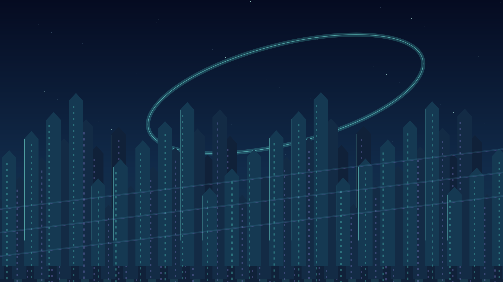

ORIGIN / MODO VERTICAL / TRÊS OPERADORES
O teu passado
joga contigo.
Escolhe AXIOM, NYRA ou KAI-7. Aprende num treino seguro, salta pelas plataformas e usa o teu eco para recuperar o último sinal. Feito para jogar com o telemóvel na vertical.
25 arenas de puzzles temporais

Outro modo · 25 arenas temporais
ECOS · PORTAIS · ROBÔS · DRONES · INTELIGÊNCIAS ARTIFICIAISFácil de controlar. Difícil de resolver.
Move-te com as setas ou o comando no ecrã. ECO guarda o percurso e rebobina. DESFAZER remove só o último eco. FASE protege-te dos emissores por um instante.
Os primeiros cinco sinais ensinam o sistema. Depois chegam as patrulhas, os portais combinados, os circuitos temporizados e as sequências de três ecos.
Jogar com ligação intermitente
Abre o jogo uma vez com internet. Quando a preparação terminar, os ficheiros da v14 ficam disponíveis neste navegador para as próximas partidas.
O clássico continua aqui.
O jogo original e a campanha ORIGIN mantêm as suas gravações e medalhas.
◈ ABRIR CLÁSSICO